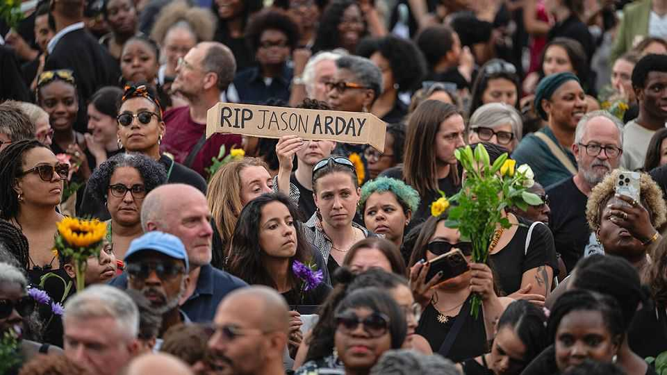
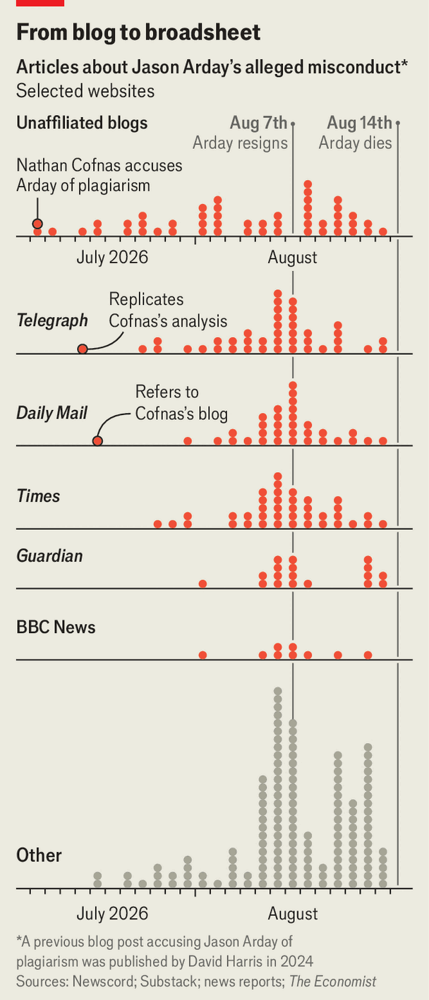

What the tragic death of Jason Arday says about Cambridge University
It has many questions to answer

Aug 20th 2026
ALICE (not her real name) never felt comfortable at Cambridge University. It was too elitist. But during her MPhil in education in 2024, one professor stood out. Gentle and dreadlocked, he took the time to learn students’ names, the sports they liked. He made them feel any one of them could be an academic. Autistic and, he claimed, non-verbal until he was 11, he did not learn to read and write properly until 18, but still became Cambridge’s youngest black professor at the age of 37. “Most of my cohort agree,” says Alice. “He’s genuinely the best teacher we ever had.”
Granted, Jason Arday wasn’t for everyone. Traditionalists disliked his classes, which included little critical study of texts and lots of ramblings about song lyrics. He often went off on unfocused rants, Alice recalls, and was “very attached” to his personal story. Still, it was a shock when, in July, allegations grew that he had plagiarised extensively, fabricated research and lied about his CV. When he resigned on August 5th, hours after Cambridge opened an investigation into his qualifications, Alice was confused and disappointed. Nine days later, when he was found dead (in circumstances police called unexpected but not suspicious), she was angry.
By conventional measures, Mr Arday should never have been appointed to a chair at one of the world’s top-ranked universities. Only six years earlier he had been lecturing in physical education at Leeds Beckett University, a former polytechnic. His first academic paper appeared in 2018.
Cambridge was looking at different criteria. It had been shaken by the institutional reckonings that followed the killing of George Floyd in Minneapolis in 2020. In March 2023 a damning internal report noted that over the previous three promotion rounds none of the 216 eligible applicants for professorships was black. The report spoke of an “urgency to build the pipeline of Black scholars at the University through recruitment and promotion”. That month Mr Arday took up his post as a professor of sociology of education. A press release said a “major focus of his work” would be helping Cambridge recruit a “more diverse range of students and staff”.

He specialised in racial inequality in academia. Two books he had co-edited, including “Dismantling Race in Higher Education: Racism, Whiteness and Decolonising the Academy”, were added to the sociology curriculum. He was happy to tell his sensational story on camera.
In July a blog post challenged his narrative. It found dozens of plagiarised passages in his doctoral thesis and queried some of his sensational feats, such as running 30 marathons in 35 days. The author, Nathan Cofnas, was hardly impartial: a self-described “race realist”, he had left Cambridge in 2024 after a backlash to his chauvinistic view that in a true meritocracy black people would “disappear from almost all high-profile positions outside sports and entertainment”. Yet the Times Higher Education had planned to publish a similar story in 2025, only to drop it after Mr Arday instructed lawyers.
In a quiet month, national newspapers and social media piled in (see chart). The release in America of Mr Arday’s memoir, the aptly named “Great and Unfortunate Things” (and the leaking of an at times contradictory book proposal), raised more eyebrows. He claimed he had spent months in a coma with locked-in syndrome, had testicular cancer, two brain tumours, and epilepsy after being beaten by teenage thugs. The book also included a moment of prescience. After sending his application to Cambridge, Mr Arday wonders if he has “completely overestimated” his capabilities. “What if”, he writes, “my story ends up being a cautionary tale like Icarus about flying too close to the sun?”
Cambridge faces many questions. “All of this could’ve been avoided if Cambridge did its due diligence, a basic background check,” says Clive Aruede of the Association of Black Humanists. The university told The Economist it continued to provide support after Mr Arday resigned, screening his emails and posts for racist messages, and providing counselling. Many will wonder if it did enough for the man it placed on a pedestal once he fell off it.
The myths about Mr Arday are already being written. Both sides of the culture war portray him as a black victim. A totem for a cult of wokeness in an academy which prioritised diversity over merit; a hero hounded to death by a racist press. The likelier story is both duller and more depressing: an institution wanted a symbol badly enough not to look too closely, and a vulnerable man supplied one.■